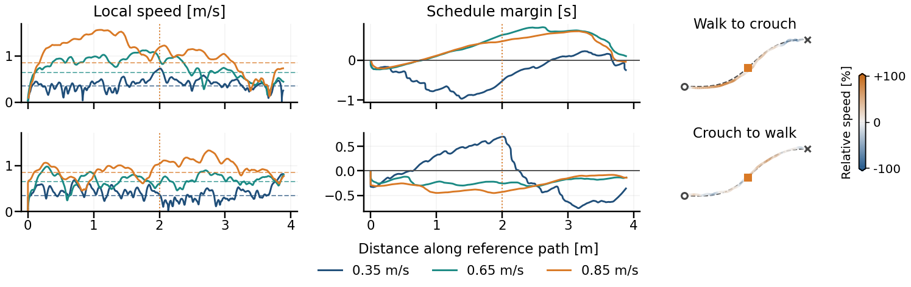

Path Diff
Path-Conditioned Diffusion Policies
for Quadruped Locomotion
From velocity-conditioned demonstrations to
route, posture and timing control.
Illustrative simulation at a requested mean of 0.55 m/s.
Ongoing research · SOLO12 in Isaac Lab · Simulation results
Overview
Abstract
Diffusion policies can learn several locomotion behaviours from demonstrations. We investigate what happens when the task is specified differently: follow a path, change posture at particular locations and finish at a requested average speed. The controller must decide how to use the demonstrated motion to satisfy these requirements together, without a skill identifier or a prescribed local speed profile.
Path Diff learns from trajectories collected with velocity-conditioned walking and crouching experts. We relabel the recorded motion for the new task interface, train a diffusion policy by imitation and refine it with Diffusion Policy Policy Optimization (DPPO). We study what transfers through imitation, what refinement changes, and the trade-offs against frozen-expert control and Gaussian imitation with PPO.
Method
From velocity demonstrations to path-conditioned control
A path and its height requirements describe where to go and how to move.
A target average speed sets the time budget, not the speed of every step.

Relabel recorded motion
Two-second windows are labelled with the XY path followed and mean speed achieved. We retain the recorded height commands, observations and actions. No path-following expert is required.
Learn, then refine
Offline imitation learns the relationship between these inputs and motion. DPPO then adapts the policy through interaction, with rewards for route tracking, posture and timing.
Act and replan
Robot history, local path and height targets, and timing feedback condition eight predicted actions. Four are executed at 50 Hz before replanning at 12.5 Hz.
Closed-loop comparisons
Direct control and frozen experts
Each set uses the same route, posture profile and requested mean speed.
The clips illustrate individual executions; the tables aggregate evaluation runs.
Loading comparison
Loading comparisons…
Path Diff and Gaussian generate action chunks at 12.5 Hz. The hierarchy selects an expert and velocity command at 5 Hz; all apply joint targets at 50 Hz. Videos and evaluation traces are separate rollouts, not exact replays.
Learning the task
Imitation and online refinement
The offline policy produces locomotion and responds to the new inputs, but rarely meets all requirements together. Refinement improves joint completion on the original report benchmark.
Original I2R experiment, separate from the comparative bank below. Adherence combines the original task criterion with active lateral RMSE ≤10 cm. Refined values average three online runs sharing an offline prior; the imitation row is the initial policy.
Comparative results
Tracking, completion and posture composition
We first inspect conservative requests on the four base route families.
The broader bank, including higher speeds and geometry stress, is reported separately.
Loading evaluation bank…
Mean across three online runs per controller; all attempts in each displayed block are retained. Core and repeated blocks use different requested speeds and should not be subtracted to estimate a composition effect. Original task pass checks arrival, terminal pose, mean speed and average height; tracking-gated pass adds active CTE RMSE ≤10 cm. Active errors include available partial trajectories. Green marks the largest pass-rate mean where the methods differ, not statistical significance.
Support and protocol. These conservative requests are a post-hoc development subset, not proof of identical training support. Crouch was deliberately underrepresented at high speeds in Path Diff's data, and its online constant-crouch requests stopped at 0.4 m/s. The hierarchy retains access to the expert. Decision rates, checkpoint selection and initialization drift also affect the comparison.
Full bank: every tested speed, posture and method ↗Spatial posture control
Posture changes along the route
We inspect the response around one change and across a repeated profile. The full route matters: reaching the end does not establish that every intermediate posture was reproduced.
One change
0.25 m/s · four base families
Four successive changes
0.35 m/s · complete 4 m routes
Lines average recorded route responses within each actor, then across three actors per method. Shading spans available actor means, not a confidence interval. Means use observed samples only; missing tails are not extended. These traces do not correspond exactly to the individual videos.
A closer look at the repeated profiles
Eight base-family routes per starting posture and actor. The retrospective all-section diagnostic requires spatial height MAE ≤4 cm in every section, including transition response. It retains every attempt but uses exploratory coverage conventions; it is not a validated task-success or smoothness metric. No winner is assigned to this diagnostic. Full definition →
Route-level timing
Controlling route-average speed
The robot may slow down during a turn or crouch section and recover time elsewhere. The speed input reflects the average pace still needed over the remaining route.
bt = clip(L − stmax(T* − t, Δt), 0, 1.5)
T* = route length / requested mean speed. The 1.5 m/s limit bounds the conditioning input, not actual robot speed.

Keeping the trained actor fixed, we replace timing feedback with the fixed requested mean, then shuffle that request across tasks. This tests dependence on the temporal input, not independently trained timing representations.
Original report: 24 paired routes and 144 attempts per setting. Adherence retains all attempts; mean-speed MAE is conditional on first arrival. The same actor is used in all three settings.
Geometry and scope
Base routes and geometry-stress tests
The bank includes new draws from the base generators and separately constructed arcs, S-curves and corners. Novel geometry and unsupported speed requests are different kinds of generalization; we do not pool them into a shared OOD claim.
Interpretation
Scope and limitations
The experiments support studying diffusion policies under a route–posture–timing interface, rather than only reproducing velocity-conditioned motion. They also expose limits: task pass can hide an incomplete posture sequence, and better lateral tracking does not imply better performance on every task.
All imagery and results shown here are simulated. The comparative bank has been used for development and visual inspection. The three Path Diff runs share an offline prior; they do not represent independent data-collection and imitation runs. This comparison does not establish that diffusion is necessary, that all hierarchies have abrupt transitions, or that the smoothest-looking motion is the most accurate.
Independent testing, a timing audit of the hierarchy and physical-robot validation remain outstanding. Transition smoothness and controllable intermediate heights are questions to measure, not claims established by these videos.
Some experimental data could not load. Please reload the page.